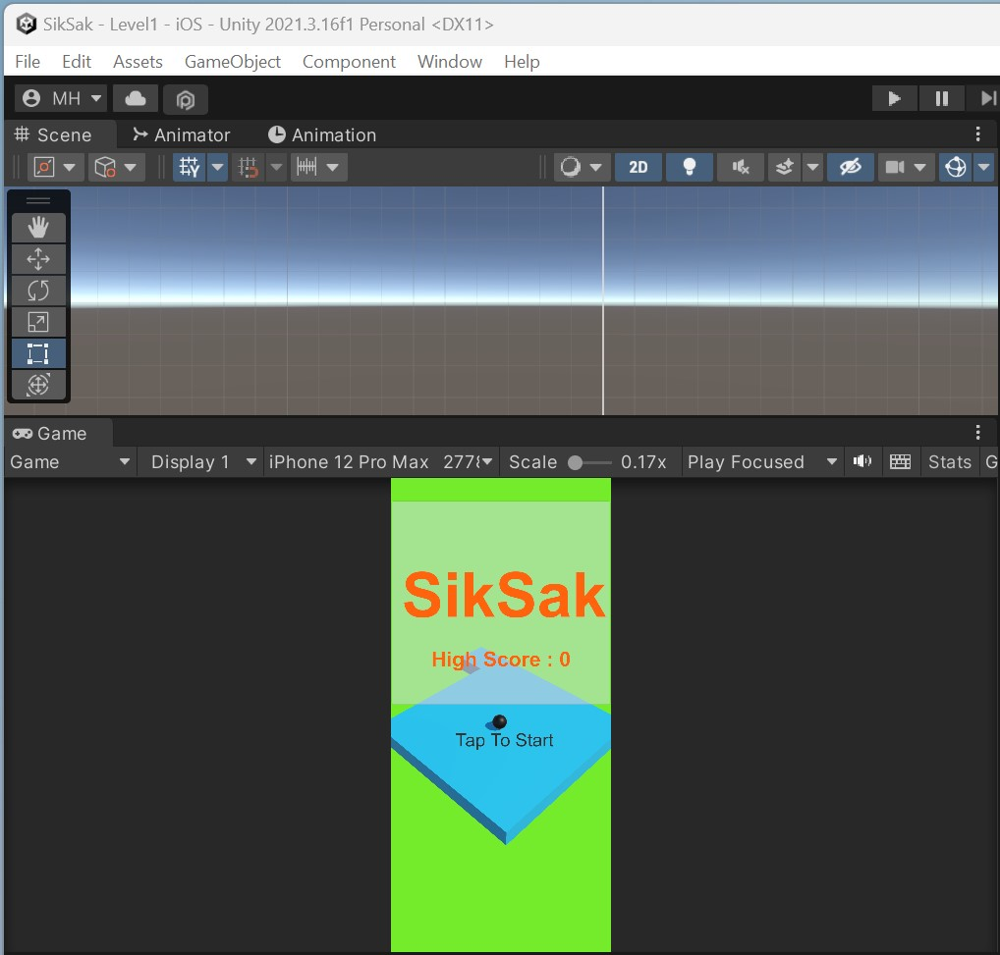
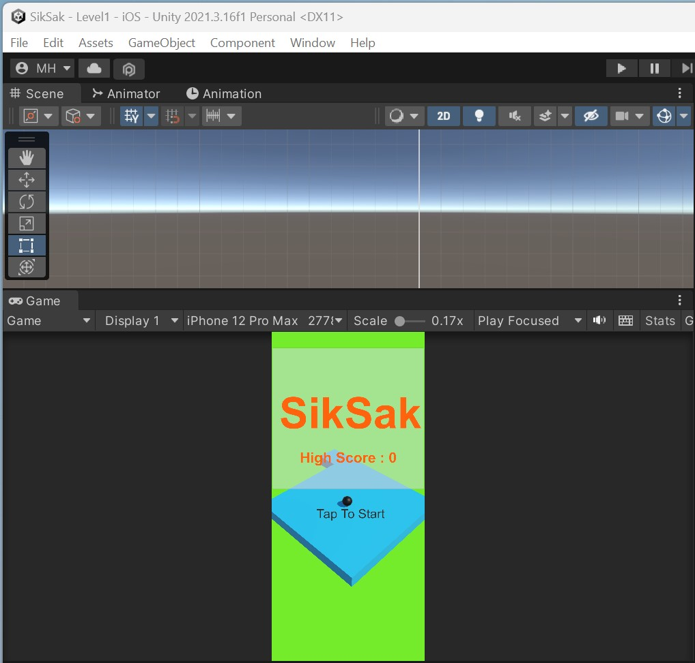
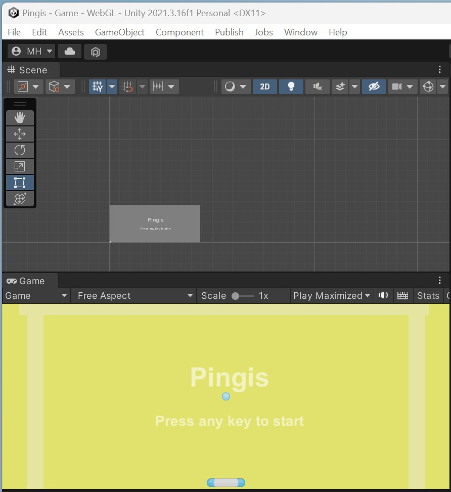
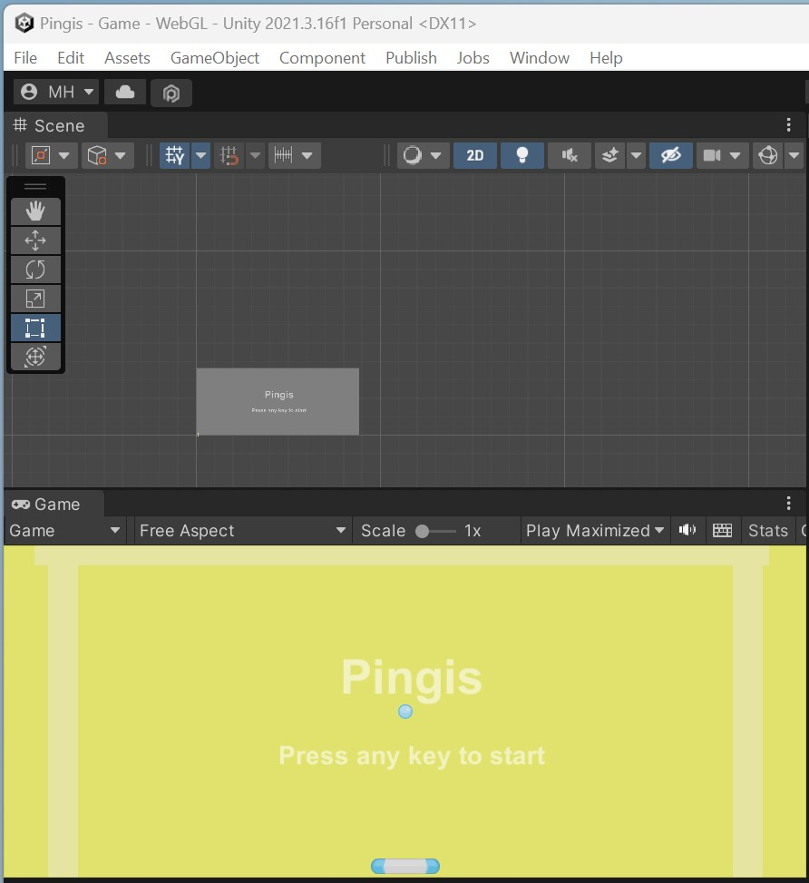

Tervetuloa minun CV nettisivuilleni!
Olen tällä hetkellä 29-vuotias ja asun Äänekoskella. Minulla on pitkäaikainen lapsuuden toiveammatti vahva kiinnostus Tietokone-alaan ja Tietoteknistä harrastuneisuutta osaamisen kauttakin tuntuu oikealta tunne ja se on minulle tärkeää, kun saan vihdoin lopulta Opiskelen tällä hetkellä Tietokone-alaa. Olen rauhallinen, tunnollinen, järjestelmällinen, minulla on todella hyvä muisti ja koen olevani motivoitumiseen ja uuden oppimiseen valmistautuva tulevaisuuden mukana enemmän. Oma rauha on todella tärkeänä keinonani asioiden mietiskelyyn, kun mietin todella hurjan paljon asioita ja olen elämänmyönteinen ja pyrin aina säilyttämään positiivisuuden rauhallisuudellani. Olen todella hurjan nopea kirjoittamaan tietokoneella se on vahvuuksiani. Pyrin tekemään asiat aina alusta loppuun saakka tunnollisesti. Käytän monipuolisesti Kannettavaa tietokonetta, älypuhelinta, tablettietokonetta ja kosketusnäyttökynää. Käyn vapaa-ajalla perheeni kanssa erilaisissa paikoissa esimerkiksi. kaupoissa ja kirpputoreilla. Käyn virtuaalipelimaailmoissa, pelaan erilaisia pelikonsoli- ja tietokonepelejä, käytän monipuolisesti tietokonetta, tablettitietokonetta ja älypuhelinta kaikkeen tiedon hakemiseen netistä harrastuksiini kuuluu myös uiminen ja lisäksi tietokoneen käyttö monipuolisesti esim. vikojen korjaaminen ja käytän erilaisia sosiaalisia medioita kuten esimerkiksi. Facebookia, Youtubea ja X Sosiaalisen median palveluina monipuolisesti.
Koulutus, Työharjoittelut, Työkokemus ja Projektit
Tällä hetkellä jatko-opiskeluna opiskelen Kiipulan Ammattiopistossa Tieto-ja Viestintätekniikan Perustutkintoa IT-Tukihenkilöksi Keväästä 2023- Syksyyn 2025 saakka. Koulutukseltani olen Merkonomi, Paikkana Pohjoisen Keski-suomen Ammattiopisto ja Bovallius Ammattiopiston kanssa yhteistyössä olevasta Koulutuksesta, 2012-2015 Valmistuin Merkonomiksi keväällä 2015. Ennen sitä Opiskelin syksystä 2010–2012 keväälle saakka Ijkk:n Ammatillisessa Valmentava koulussa. Minulla on voimassaoleva hygieniapassi ja olen suorittanut Mestarimyyjä Koulutuksen ja Tietokoneen Ajokortteja. Kielitaidoissani Suomi on Äidinkieleni. Luen ja puhun englantia kohtalaisesti. Kohtaan englantia paljon tietokoneohjelmistoissa. Luen ja puhun Ruotsia kohtalaisesti. Tietotekniikkataitojani on Officesta. Powerpoint, Word ja Excel, Kuvankäsittely esimerkiksi. Photoshop, Julkaisuohjelmasta esimerkiksi. InDesign, sähköposti, internet, WWW-sivujen koodaaminen ja Pelien koodaaminen ja tietokoneohjelmistot.
Työkokemuksena viimeisimpänä keväällä 2024 olen ollut Koulun Työharjoittelussa Ääneseudun Ilona Ry, jossa työtehtäviini on kuulunut mm:. Asiakkaiden digiopastus esimerkiksi mobiiliapu, Canva esite ja tapahtuma mainosten graafinen tekeminen tekoäly kuvien suunnittelua ja lisääminen viralliseen sosiaaliseen mediaan, tietokoneiden, tulostimien, langattomien nettilaite reitittimien asentaminen, päivittäminen ja viruksentorjuntasovellusten tarkastaminen, Yhdistyksen virallisten Wordpress nettisivujen päivittäminen Google kalenteri toiminnolla, Ruoka-apu toiminnassa esimerkiksi toimistotyönä raporttien tekemistä tietokoneella järjestelmään ja tietokoneen Rallipelin lisälaitteiden testaaminen ja päivittäminen. Olen ollut myös keväällä 2024 Koulun työharjoittelussa Äänekosken Koskela Setlementti ry:ssä, jossa työtehtäviini on kuulunut mm.: Ohjaajana diginurkkauksessa ti ja to päivisin klo 14-16, tietokoneiden ja tablettien päivittäminen sekä diagnostiikan tarkastaminen, lisälaitteiden testausta sekä tietokonejohtojen lajittelua, tulostimien asentaminen / päivittäminen, tietokoneen asentaminen telakkaan, nettilinkkien päivittäminen (mm. pedanet linkkien), virustorjuntasovellusten tarkastaminen ja Canva mainoksen suunnitteluun osallistuminen sekä lisääminen sosiaaliseen mediaan. Jo 2023-2024 Keväästä lähtien olen ollut Koulun välillä vaihtelevina määrinä viikossa eri päivinä muotona tekemällä oppimisena käytännössä erilaisissa Kirjastoympäristöissä esimerkiksi. Työssäoppimisessa Hämeenlinnan Kumppanuustalolla ja Hämeenlinnan Kaupungin Pääkirjastolla, joissa olen tehnyt erilaisissa Mobiiliapuna Työtehtävissä Teho- ja Digiopastamista Asiakkaiden ongelmissa myös tietoteknisienkin Kannettavien tietokoneiden ja Tablettitietokoneiden ja Mobiililaitteiden Äly- puhelimien kanssa. Olen ollut myös Koulun Kevään 2023 Työssäoppimisjaksolla Äänekosken Kaupungin Pääkirjastolla esimerkiksi. Digituutorin työtehtävissä auttamassa Asiakkaita heidän tietoteknisissä ja mobiililaitteiden ongelmissa Kannettavien tietokoneiden, Tablettitietokoneiden kuten iPadien ja Äly- puhelinten kanssa. Vuoteen 2020 saakka olen ollut Lähikaupassa K-Market Markkamäki Äänekoskella auttavissa työtehtävissä kuten hyllyjen järjestely. Minulta löytyy Vapaaehtoistyö kokemusta Virtuaalipelimaailman Habbo Hotel Suomen Lähettiläänä Kevääseen 2016 saakka. Aiempana Työssäoppimisena olen ollut Keväällä 2015 Siwa Puistokatu Äänekoskella, jossa työtehtävinäni tein erilaisia kaupan alan perustyötehtäviä hyllytystä ja hyllyjen järjestelyä. Pohjoisen Keski-Suomen Ammattiopiston Aikuiskoulutuksen Toimistoympäristö 2015 Keväällä, jossa tein työtehtävinäni ainakin esimerkiksi. Asiakirjojen skannaamista ja IT-tehtäviin tutustumisena Kannettaviin tietokoneisiin Windows Käyttöjärjestelmän asentamisia. Olin jo loppu Syksystä 2013 aina 2014 keväälläkin vielä jatkuen Expert Kesport Niskanen Suolahdessa, jossa tein työtehtävinäni esimerkiksi. Asiakkaiden uusien Tietokoneiden käyttöönottoa apuna, Asiakkaiden neuvomista mobiiliapuna, tuotteiden hinnoittelua, tuotteiden kuten uusien Televisioiden kasaamista ja tuotteiden järjestelyä. Siwa Markkamäki, Äänekoski 2013 keväällä (6) viikkoa tein erilaisia kaupan alan perustyötehtäviä hyllytystä, hinnoittelua yms. Siwa Puistokatu Äänekoski 2012 keväällä (1) viikko tein erilaisia kaupan alan perustyötehtäviä hyllytystä, hyllyjen järjestelyä. K-Rauta Palokka, 2012 keväällä (1) viikko tein monipuolisia kaupan alaan suuntautuvia työtehtäviä tuotteiden kasausta. grillien tms., tuotteiden hyllytystä. Viherlandia Jyväskylä 2012 keväällä yksittäisiä päiviä n. (1) viikon verran tein seuraavanlaista työtehtävää kaupan-alaan liittyen ruukkujen merkitsemistä. K-Rauta Palokka, 2012 keväällä myös yksittäisiä päiviä n. (1) viikon verran tein monenlaisia työtehtäviä tuotteiden kasaamista, hyllytystä tms. Jyväskylän Kaupunginkirjastoauto, 2011 loppuvuodesta n. viiden päivän verran työtehtäviini kuului lainausten hoitamista. Siwa Puistokatu Äänekoski, 2011 loppuvuodesta (1) viikko työtehtäviäni oli tavaran purku, hyllytys tms. järjestely. Siwa Tapionkatu Jyväskylä (1) viikko työtehtäviäni oli hyllyjen järjestely. K-rauta Palokka, 2011 keväällä myös yksittäisiä päiviä n. (1) viikon verran Monipuolisia työtehtäviä tarravarashälyttimien kiinnitystä, hyllytystä ja tuote inventointia. Viherlandia Jyväskylä, 2011 keväällä yksittäisiä päiviä n. (2) viikon verran työtehtävinäni täytettyjen ruukkujen järjestelyä kasvipöydille ja taimien istutusta tms. Siwa Puistokatu Äänekoski, 2010 loppuvuodesta (2) viikkoa monipuolisia työtehtäviä hyllytystä, tavaran purkamista ja järjestelyä. S-Market Äänekoski, 2010 syksyllä (1) viikko työtehtäviä oli tavaran purku, hyllytys ja järjestely. Peruskoulun TET Työelämään tutustumisen jaksoilla olen ollut Agrimarket Äänekoskella keväällä 2010 (1) viikon, työtehtäviäni oli esimerkiksi. lumityöt, tavarakuorman purkua ja lavojen kasaaminen pinoiksi. SPR Kirpputori Äänekoski keväällä 2009 (1) viikon kuluessa n. aikoja työtehtäviäni oli esimerkiksi. Siivoaminen, tavaroiden järjestely, tavaroiden autokuljetuksissa apuna mukana oleminen ainakin tutustumisena. ja myös tutustuminen oikeiden myyjien kassatyöskentelyyn.
Projekteina olen tehnyt koodaamalla Esteratapeliä, Rakettipakettipeliä, Palloiluapeliä, SikSakpeliä, Pingispeliä RoskatKoriinpeliä ja Koulun tekoälyprojekti peliä.
 

 
